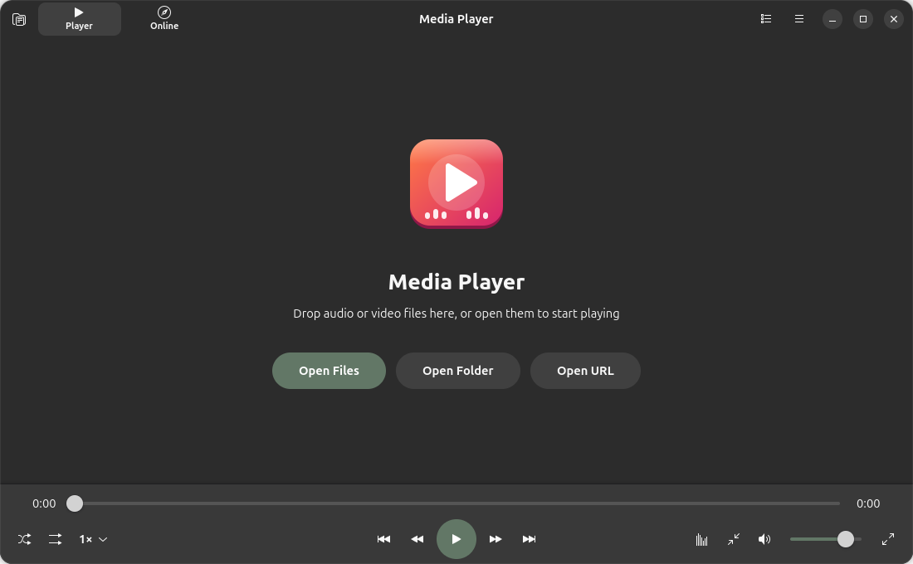

Media Player for Ubuntu
Audio and Video Player

About
Play every audio and video format with playlists, subtitles and an equalizer. Media Player is part of HRHsofts Apps and is installed for every account on this computer, like the built-in applications.
Open HRHsofts Setup to add or remove it.
Install
From the terminal (adds the signed HRHsuite repository so Media Player keeps itself updated):
wget -qO- https://hrhsofts-repos.github.io/apt/install.sh | sudo sh -s -- mediaplayerIf the repository is already set up, or on HRHsofts Ubuntu:
sudo apt install hrhsofts-mediaplayerOr download the .deb and install it with App Center or sudo apt install ./hrhsofts-mediaplayer_1.2.3-1_all.deb.
- Package
hrhsofts-mediaplayer- Version
- 1.2.3
- Released
- 2026-11-09
- Size
- 148.9 KB
- SHA-256
2a7b24d8b388eb8941f0e26fd680173792354c7eb6a3e4b6c8fcd967c518baa5- License
- GNU GPL 3.0 or later (free software)
- Requires
- Ubuntu 26.04 or later, 64-bit (amd64)
What's new
Version 1.2.3 · 09 Nov 2026
- Check for Updates in the main menu: new versions are downloaded from the HRHsuite update service and installed after one password prompt
- A notification offers new versions automatically, at most once a day
Version 1.2.2 · 09 Nov 2026
- Every control stays reachable at any window size: what does not fit moves to a new More button with labelled buttons and the volume, and comes back as the window grows; nothing is cut off at the window's edge any more
- In a narrow window the Player and Online switch moves below instead of being squeezed, and in a short window the song page scrolls instead of hiding the play controls
- Picture-in-Picture can be as small as 240 pixels wide and keeps all its controls; they get smaller in a small window instead of being cut off
- Recently Played has Clear All and a remove button on each entry, both with Undo
- Clearing the playlist also closes the lyrics panel
Version 1.2.1 · 08 Nov 2026
- Lyrics results are checked against the song title, singer and duration instead of trusting search order; ambiguous matches are not guessed and other-length recordings are not shown timed
- Unverified automatic caches are ignored; same-title songs with different singer hints or albums no longer share cached lyrics
- Late metadata corrects the lyrics lookup; replaying a track discards callbacks from its earlier playback
Version 1.2.0 · 08 Nov 2026
- Download button next to the stream quality (Ctrl+D): save an online video at the resolution you pick as MP4, MKV or WebM, or only its sound as MP3, M4A, Opus, FLAC or WAV, with progress, the speed and where it was saved; files on this computer can be copied or have their sound extracted
- The tray icon shows the Media Player icon, or the cover of what is playing, instead of three dots
- Lyrics show when turned on: lyrics stored inside MP3 files are read, songs named "Song | Film | Singers" or "01 - Artist - Title" are found online, timed lyrics follow the song, and Search Online or Open Lyrics File let you pick them yourself
- Space no longer presses Clear Playlist or Open again after they were clicked; Save Playlist asks before replacing a file; opening a file from Files keeps the remembered playlist
- Save Clip of a repaired file is named after the original; Equalizer Reset shows Flat; Recently Played hides resume times when resuming is off; quitting stops YouTube lookups and removes unfinished repairs
Version 1.1.2 · 08 Nov 2026
- Picture-in-Picture has a full set of controls: previous, back and forward 10 seconds, play or pause, stop, next, a seek bar you can drag with the times, mute and volume, Back to Full Window and Close
- Picture-in-Picture: Esc always brings the full window back, the controls stay up while the pointer is on them, it returns to fullscreen when started from there, and audio-only items bring the full window back
- Space no longer presses the last clicked button again; the playlist comes back after fullscreen; the seek bar no longer jumps back while dragged
- The end of a file is no longer mistaken for a damaged part after a busy moment; a seek or speed change right after opening a file is kept
- Save Clip no longer hangs on unusual file names or long error logs, and quitting stops it cleanly
- Manual and automatic captions in the same language, lyrics, playlists that include themselves and damaged settings are handled correctly
- Settings are saved within two seconds of a change; the thumbnail cache has a limit
All HRHsofts apps · Get HRHsofts Ubuntu with Media Player preinstalled